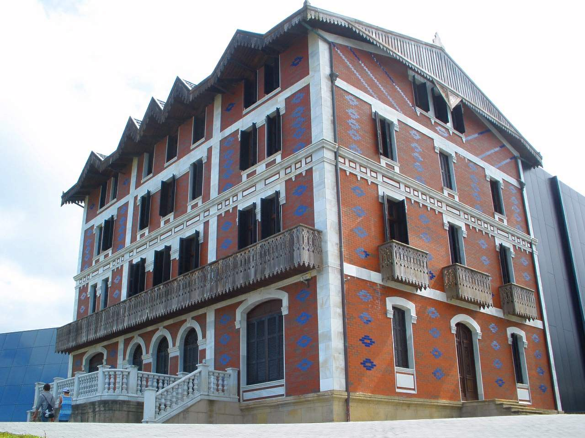
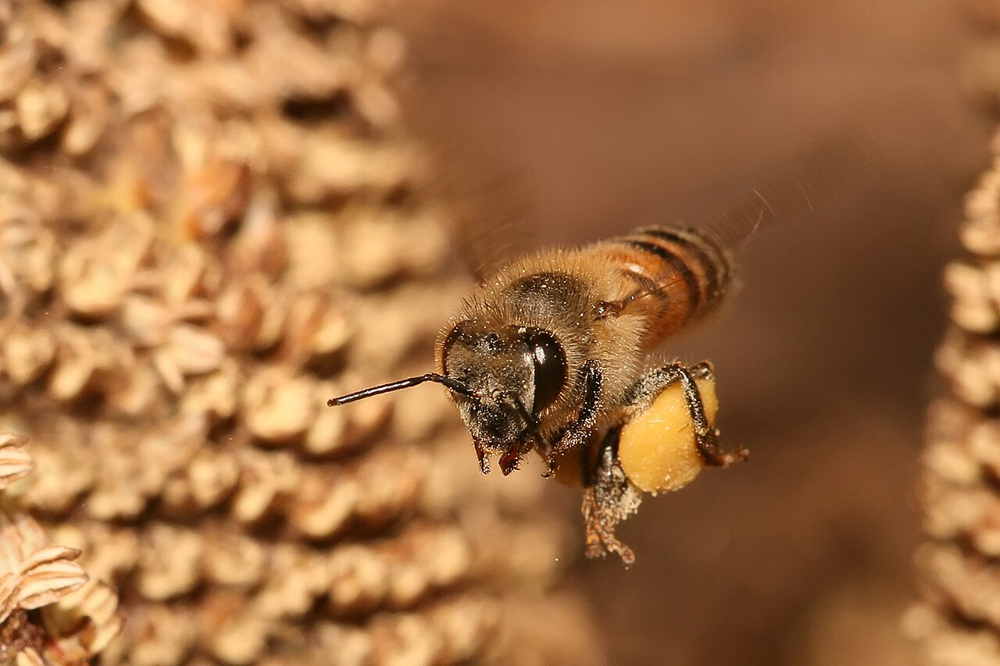
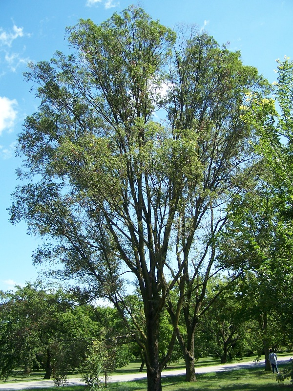
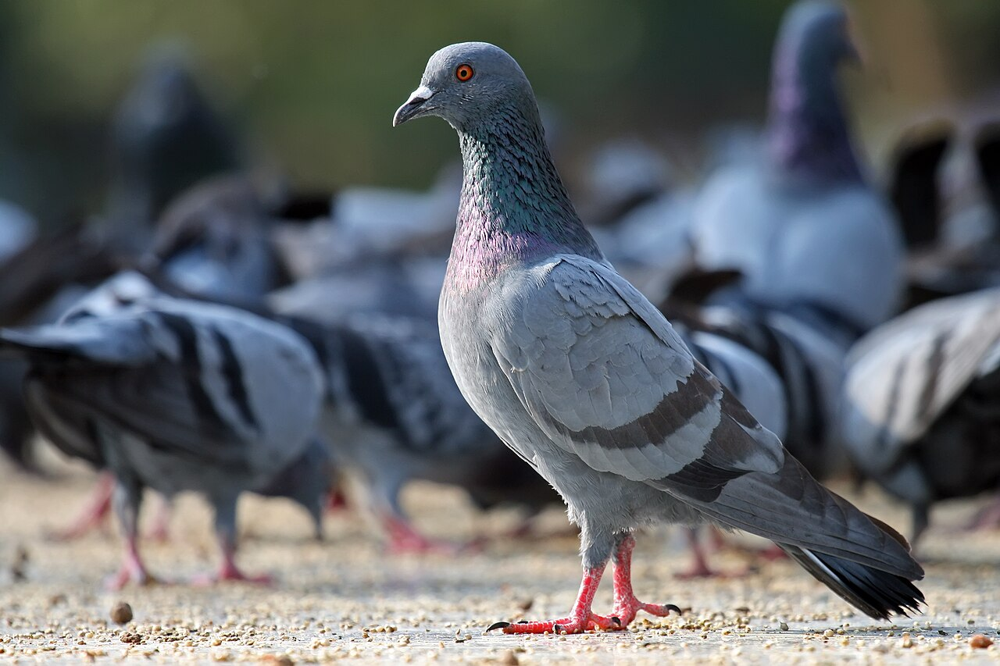
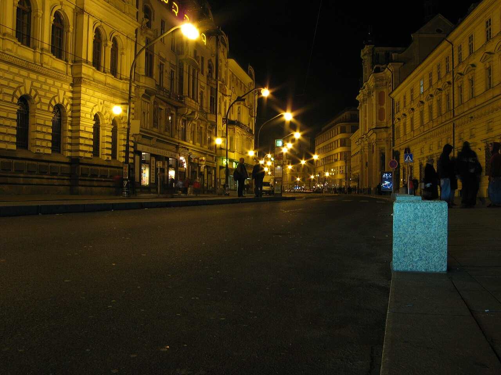

Lula.
diario de la mañana — el mundo, tu ciudad y lo que te asombra

Buen día, martes. Día inestable: de 19° a 26 o 27°, con tormentas aisladas de madrugada y a la mañana y chaparrones a la tarde. Hay alerta amarilla, esta vez sí incluyendo la Ciudad. En el Congreso es un martes clave. Y la ciencia de hoy entra por un lugar inesperado: las bacterias del intestino de las abejas, que tienen más genes de resistencia a antibióticos de los que te imaginás.
- El mundo en cinco minutos3'
- Argentina y Buenos Aires2'
- Ciencia: el resistoma de las abejas6'
- Mirá a tu alrededor2'
- Receta de estación2'
- La palabra del día1'
- Le français du matin2'
- English corner3'
- Martes de moda: Balenciaga4'
- Hoy en la historia · un lugar2'
- Lo que me asombra hoy1'
- Pasatiempo: sudoku fácil10'
- Cuaderno: repaso, quiz y escritura4'
Manila cierra la ASEAN y Shenzhen se prepara para la APEC
Hoy es el último día de la cumbre de la ASEAN en Manila, con una reunión de los líderes del Quad —Estados Unidos, India, Japón y Australia—, el bloque que busca contrapesar la influencia de Pekín en el Indopacífico. En paralelo, Shenzhen termina de armarse para la cumbre de la APEC, mañana y pasado, donde está prevista la reunión de Xi, Trump y Putin sobre armas nucleares.
Por qué importa: en cuarenta y ocho horas los mismos países van a estar en dos mesas de lógicas opuestas: el Quad, que existe para contener a China, y la APEC, que existe para comerciar con ella. Esa doble vida es, en resumen, la política exterior de casi todo el mundo hoy.
Francia para, y la guerra sigue
En Francia siguen la huelga general y las movilizaciones contra el aumento del costo de vida. Ucrania volvió a atacar el puente de Crimea, en el segundo ataque masivo con drones sobre territorio ruso en veinticuatro horas. E Irán reivindicó otro ataque, esta vez contra un radar estadounidense en Baréin.
Y además: el nuevo Parlamento de Serbia celebra hoy su sesión constitutiva en Belgrado · la OMS tiene su rueda de prensa semanal en Ginebra.
Martes clave: dictamen de Presupuesto y suspensión de las PASO
El Gobierno busca hoy dos firmas en comisión: el dictamen del Presupuesto 2027 en Diputados y el de la reforma política que suspende las PASO, en el Senado. La idea es llevar el Presupuesto al recinto el 25 de noviembre; la sanción en el Senado quedaría para diciembre, ya en sesiones extraordinarias.
Los números del proyecto: para 2027 el Ejecutivo proyecta una inflación del 18 % interanual, un crecimiento del 4 % y un dólar de $1.847,60 a diciembre, con superávit primario del 1,3 % del PBI. El contraste con lo de ayer es llamativo: las consultoras esperan para este año 30 % de inflación y 0,7 % de crecimiento. Un presupuesto es un documento político además de contable: de los supuestos que elige salen las partidas.
Para hacer en la ciudad
- Macciò en el Bellas Artes (Libertador 1473), hasta el 14 de febrero y gratis. Si llueve a la tarde, es el plan.
- Ciclo John Huston en la Sala Lugones, hasta el 4 de diciembre.
Lo que llevan adentro las abejas: 55 genes de resistencia
De qué estamos hablando: del resistoma: el conjunto de genes de resistencia a antibióticos presentes en una comunidad microbiana, se expresen o no. La idea importante es que la resistencia no «aparece» cuando usamos antibióticos —ya está ahí, en el ambiente, desde mucho antes— y lo que hacemos es seleccionarla. La apicultura es un buen lugar para mirarla: es de las pocas actividades donde se aplican antibióticos a un insecto.

Quién es quién
- El microbioma de la abeja: es un modelo precioso justamente por lo chico. Mientras el intestino humano tiene cientos de especies, el de Apis mellifera tiene un núcleo de apenas cinco a ocho —entre ellas Snodgrassella y Gilliamella, bacterias que viven pegadas al epitelio del íleon—, transmitidas de abeja a abeja dentro de la colmena.
- Gen de resistencia (ARG): una secuencia que le permite a la bacteria sobrevivir a un antibiótico: una bomba de eflujo que lo expulsa, una enzima que lo rompe, o una versión modificada del blanco que el antibiótico ya no reconoce.
- Tetraciclinas: la familia de antibióticos que más se usó en apicultura, sobre todo la oxitetraciclina contra la loque americana, una enfermedad bacteriana de las larvas causada por Paenibacillus larvae. En la Argentina su uso está regulado por SENASA.
- Transferencia horizontal: el motivo por el que esto no se queda en la colmena. Los ARG viajan en plásmidos, transposones e integrones entre bacterias que ni siquiera son parientes.
Qué encontraron
- Muestrearon bacterias intestinales de abejas de 13 apiarios de Estados Unidos y secuenciaron el resistoma.
- Identificaron 55 genes de resistencia distintos, asociados a resistencia frente a 14 clases de antibióticos. No a uno: a catorce.
- Los genes de resistencia a tetraciclinas aparecieron en todas las colmenas muestreadas, aunque con abundancia muy distinta según la ubicación.
- Los autores son explícitos en lo que no muestran: la presencia de estos genes no prueba que los antibióticos del ambiente estén causando la muerte de colonias.
Lectura crítica
- Detectar un gen no es detectar resistencia. La metagenómica encuentra secuencias; que esas secuencias se expresen, en qué bacteria están y si alcanzan para sobrevivir a una dosis real es otra cosa. Entre «hay un ARG» y «esta bacteria es resistente» hay un cultivo y una CIM de distancia.
- Trece apiarios de un solo país no son el mundo, y la variación entre sitios fue grande: eso sugiere que el factor dominante es local —qué se usa cerca, qué hay en el agua— más que algo universal de la especie.
- Y la pregunta que queda abierta es la interesante: si el resistoma ambiental siempre estuvo, ¿cuánto de lo que medimos es herencia antigua del suelo y cuánto es consecuencia nuestra? Para contestarlo hacen falta controles de lugares sin exposición, que cada vez son más difíciles de encontrar.
La conexión con lo que estudiás
Esto es Una Salud (One Health) en su forma más concreta: humanos, animales y ambiente comparten un mismo pool de genes. Y tiene una lección metodológica que vale para tu carrera entera: la metagenómica cambió la pregunta. Antes se cultivaba una bacteria y se medía su resistencia; hoy se secuencia una comunidad y se infiere su potencial. Ganamos escala —ves todo lo que hay, incluido lo no cultivable, que es la mayoría— y perdimos certeza funcional. Las dos aproximaciones no compiten: la secuencia te dice dónde mirar y el cultivo te dice qué es verdad.
El trabajo se publicó en Applied and Environmental Microbiology en octubre de 2026; los números —13 apiarios, 55 genes, 14 clases— los tomé de la cobertura, no del paper. Si lo buscás, está en journals.asm.org/journal/aem.
Biotec en el mundo real · IBioBA, el Max Planck de Palermo
En el Polo Científico Tecnológico de Palermo —el de los ex Talleres del Ministerio, en Godoy Cruz 2390— funciona el IBioBA, Instituto de Investigación en Biomedicina de Buenos Aires: una unidad conjunta del CONICET y la Sociedad Max Planck alemana, y el primer instituto socio de Max Planck en Sudamérica.
- Qué se hace ahí: biología celular y molecular aplicada a biomedicina —señalización, neuroendocrinología, biología de tumores—, con equipamiento de microscopía e imágenes que en el país hay en pocos lugares.
- Por qué el modelo importa: no es una filial. Es un instituto argentino con financiamiento y estándares compartidos, lo que en la práctica significa evaluación externa y movilidad de becarios hacia Alemania y de vuelta.
- El edificio: las fuentes no coinciden en la fecha exacta de inauguración —2011 según el instituto, 2012 según otras—, ni en quién lo dirige hoy. Si te interesa postularte, eso se chequea en su sitio.
- Salida laboral: doctorado con beca, técnico de plataforma (microscopía, citometría, bioinformática) y gestión de ciencia. Las plataformas, dicho sea de paso, son el puesto más estable y menos glamoroso de un instituto, y el que más se busca.
Ciencia en la vida cotidiana · Por qué la miel no se pudre
Porque es un ambiente imposible para una bacteria. Tiene una actividad de agua bajísima —alrededor de 0,6, cuando casi ningún microorganismo crece por debajo de 0,85—, así que cualquier célula que caiga adentro pierde agua por ósmosis y se deshidrata. Además es ácida, con pH cercano a 3,9. Y las abejas le agregan glucosa oxidasa, una enzima que convierte glucosa en ácido glucónico y peróxido de hidrógeno: agua oxigenada, en dosis bajas y continuas.
La excepción que importa: la miel puede contener esporas de Clostridium botulinum, que sobreviven a todo eso sin germinar. En un adulto no pasa nada, porque la microbiota intestinal las desplaza; en un bebé menor de un año, que todavía no la tiene formada, pueden germinar y producir toxina. Por eso la regla es nada de miel antes del año. No es alergia ni azúcar: es ecología microbiana.
El olmo siberiano, que está en todas partes, y la paloma de la plaza




El árbol: olmo siberiano
| Nombre científico | Ulmus pumila (Ulmáceas). De Asia central y oriental. En Buenos Aires está por todos lados: veredas, baldíos, medianeras, grietas del asfalto. |
|---|---|
| Cómo reconocerlo | Hoja chica, aserrada, con la base asimétrica —un lado del nervio arranca más abajo que el otro—: ese detalle es la firma de los olmos. Y el fruto, que sale en primavera antes de que la hoja esté hecha: una sámara redonda, papelosa, con la semilla en el centro, que cae en alfombras. |
| Lo asombroso | Está acá por una enfermedad. La grafiosis —el hongo Ophiostoma ulmi, llevado por un escarabajo barrenador— mató a decenas de millones de olmos en Europa y América del Norte en el siglo XX; el hongo obstruye los vasos del xilema y el árbol se seca de sed con las raíces en agua. El siberiano resiste bastante más, y por eso se plantó en masa como reemplazo. El problema es que resultó demasiado eficaz: crece rapidísimo, semilla a lo loco y hoy está catalogado como invasor en media Argentina. La solución se volvió el problema siguiente. |
El ave: paloma doméstica
| Nombre científico | Columba livia (Colúmbidos). La de la plaza. Originalmente una paloma de acantilados del Mediterráneo y Asia; los edificios son, para ella, acantilados con más repisas. |
|---|---|
| Cómo reconocerla | Por la enorme variedad de plumajes: grises con dos barras negras en el ala —el tipo silvestre—, blancas, marrones, moteadas. Esa variación es herencia de siglos de cría en cautiverio y escapes sucesivos. |
| Lo asombroso | Producen leche. En el buche, los dos padres —no solo la hembra— generan la leche de buche: las células del epitelio se cargan de grasa y proteína, se descaman y se regurgitan para los pichones. El proceso lo dispara la prolactina, la misma hormona que en los mamíferos; es decir, dos linajes separados hace 300 millones de años usan la misma señal para lo mismo. Y encima la leche de paloma tiene más proteína y más grasa que la de vaca. |
Misión de la semana
Chucrut casero: repollo, sal y tiempo
Dos ingredientes, un frasco y tres semanas de no hacer nada.
Ingredientes
- 1 repollo blanco (unos 800 g ya limpio)
- Sal fina: exactamente el 2 % del peso del repollo (16 g para 800 g)
- Opcional: semillas de comino o de eneldo
- Un frasco de vidrio y algo que haga de peso
Pasos
- Cortá el repollo en tiras finas. Pesalo y calculá la sal.
- Mezclá y amasá con las manos 5 a 10 minutos, hasta que suelte bastante líquido.
- Metelo en el frasco apretando fuerte: la salmuera tiene que cubrirlo.
- Poné el peso encima, tapá sin cerrar hermético y dejalo a temperatura ambiente, a la sombra.
- Entre 2 y 4 semanas. Probalo a partir de la segunda. Cuando te guste, a la heladera.
La química de la receta
Por qué 2 % y por qué sumergido: esos dos números son toda la receta. La sal genera un gradiente osmótico que saca el agua del repollo —ahí aparece la salmuera, que no agregaste: salió de adentro— y al 2 % inhibe a la mayoría de las bacterias de deterioro sin molestar a las lácticas, que son halotolerantes. Que todo quede bajo el líquido garantiza anaerobiosis: lo que asoma, se enmohece.
La sucesión, que es lo lindo: no fermenta una bacteria, fermentan tres en orden. Primero toman el control las enterobacterias presentes, que consumen el oxígeno residual. Después aparece Leuconostoc mesenteroides, heterofermentativa: produce ácido láctico, acético, CO₂ y etanol —de ahí las burbujas y el aroma—. Al bajar el pH alrededor de 4, ella misma se inhibe y la reemplazan los Lactiplantibacillus, homofermentativos y mucho más ácido-tolerantes, que llevan el pH hasta 3,4 o 3,6 y ahí el producto queda estable. Cada especie prepara el terreno para la que la desplaza. Nadie agregó nada: todo estaba en la hoja del repollo.
silueta sustantivo
francés silhouette, de un apellido → castellano silueta · inglés silhouette
Es una de las pocas palabras del vocabulario cotidiano que viene de una persona real y por burla. Étienne de Silhouette fue contralor general de finanzas de Francia en 1759, en plena crisis por la Guerra de los Siete Años, y aplicó una política de austeridad tan severa que su apellido se volvió sinónimo de «hecho barato, a lo mínimo». Se usaba para pantalones sin bolsillos y para los retratos de perfil recortados en papel negro, que eran la alternativa pobre a un retrato al óleo. De ahí quedó: la sombra recortada.
Y en moda es la palabra. Cuando se dice que Dior impuso una silueta en 1947 o que Balenciaga la destruyó diez años después, se habla exactamente de eso: del contorno del cuerpo visto a contraluz, sin detalle. Es lo primero que se ve de una prenda y lo último que se olvida.
Je déteste ça
— Tu aimes le poisson ?
— Pas du tout. Je déteste ça.
— Et le fromage ?
— Un peu. Mais je préfère le chocolat.
| pas du tout | para nada [pa dü TÚ] |
|---|---|
| je déteste ça | odio eso [she de-TEST SA] |
| un peu | un poco [an PÖ] |
| le poisson / le fromage | el pescado / el queso [le pua-SÓN / le fro-MÁSH] |
Un truco
La escala completa, de menos a más: je déteste → je n'aime pas → j'aime un peu → j'aime → j'aime beaucoup → j'adore. Y ojo con poisson (pescado) y poison (veneno): se diferencian solo por el sonido de la s, doble y sorda en el primero [pua-SÓN], simple y sonora en el segundo [pua-ZÓN]. Es el error más divertido de cometer y el más incómodo en una mesa.
The price of everything
France is on strike again, and the demand is unusually hard to argue with: people say they cannot afford their lives. This is not a dispute over a single reform that can be amended into acceptability. The grievance is diffuse, which makes it both more powerful on the street and much harder to settle at a table.
Economists will point out, correctly, that measured inflation has come down a great deal. That is the sort of answer that infuriates people, and not without reason. An index is an average over a basket, and the basket that matters to a household on a modest income is weighted towards precisely the things that have risen most: rent, energy, food. Telling someone their experience is statistically unrepresentative is seldom the beginning of a productive conversation.
What makes this politically awkward is that there is no obvious lever. A government can subsidise a bill or cap a price, but each of those costs money it says it does not have, and none of them touches the underlying problem. The strike may well change who is in office. Whether it changes the arithmetic is another question.
- hard to argue with — difícil de rebatir
- a grievance — un reclamo, un agravio
- diffuse — difuso, sin un blanco claro
- to settle (a dispute) — zanjar
- to infuriate — enfurecer
- weighted towards — con más peso en
- seldom — rara vez
- a lever — una palanca, un resorte para actuar
Balenciaga: el que sabía hacer el vestido entero
Cristóbal Balenciaga nació en Getaria, un pueblo de pescadores del País Vasco, hijo de una costurera. Abrió en San Sebastián, después en Madrid y Barcelona, y en 1937, con la Guerra Civil, se instaló en París. Lo que lo separaba del resto no era el gusto: era la mano. Era el único modisto de su generación capaz de hacer él mismo todas las etapas de un vestido —diseñar, cortar, armar, coser—, y eso se nota en la ropa. Dior lo llamó «el maestro de todos nosotros»; Chanel decía que era el único que podía vestir a una mujer de verdad.
Qué hizo distinto
- Separó la tela del cuerpo. En los años cincuenta, cuando el New Look de Dior volvía a la cintura ceñida y la estructura interna, Balenciaga fue al revés: construyó volúmenes que no tocan el cuerpo, apoyados apenas en los hombros.
- La línea tonneau, el saco y el baby doll. El vestido saco es de la colección de invierno de 1957, una década después de la línea barril; el baby doll, de cintura alta y silueta suelta, es de 1957 o 1958 según la fuente. Los dos son la misma idea: eliminar la cintura como punto de anclaje.
- El cuello separado. Su detalle más copiado: dejar un espacio entre el cuello de la prenda y el cuello de quien la usa. Alarga el cuello y hace que la prenda parezca flotar.
- La tela como problema estructural. Trabajó con el gazar y el zagar, telas de seda rígidas desarrolladas a pedido suyo, que sostienen una forma en el aire sin forro ni armazón. Pensaba como un ingeniero: si el material aguanta, no hace falta estructura adentro.
El final
En 1968 cerró todo —París, Madrid, Barcelona, San Sebastián— sin aviso; las fuentes no coinciden en si fue en mayo o el 1.º de julio. La razón que dio es la que sigue siendo cierta: la alta costura ya no tenía lugar frente al prêt-à-porter, y él no estaba dispuesto a hacer otra cosa. Murió en 1972. La marca se reactivó en 1986, y hoy es una casa de lujo grande y ruidosa que tiene poco que ver con aquel taller.
Dicen que cuando le preguntaron por qué cerraba, contestó que ya no quedaba a quién vestir. No era desprecio: era que el oficio que él hacía necesitaba un mundo que había dejado de existir.
17 de noviembre de 1989: Praga
Era una marcha estudiantil autorizada, por el cincuenta aniversario del cierre de las universidades checas por los nazis. Miles de estudiantes bajaron hacia el centro de Praga y, en la avenida Národní třída, la policía los encerró y los golpeó. Hubo decenas de heridos y ningún muerto, aunque esa noche circuló el rumor de que un estudiante había muerto: el rumor era falso y fue, igual, lo que encendió todo.
Lo que siguió fue muy rápido. Las universidades se declararon en huelga de ocupación; los actores de los teatros se sumaron y usaron las salas como asambleas; la gente llenó la plaza Wenceslao. En once días cayó la cúpula del Partido Comunista, y antes de fin de año Václav Havel —dramaturgo, preso político hasta hacía meses— era presidente. Se la llamó Revolución de Terciopelo por lo que no tuvo: violencia.
El lugar: Národní třída

| Dónde | Una avenida del centro de Praga que une la plaza Wenceslao con el río. A mitad de cuadra, bajo los arcos del palacio Kaňka, está la placa conmemorativa: una serie de manos en bronce con los dedos en V. |
|---|---|
| Hoy | El 17 de noviembre es feriado nacional en la República Checa: el Día de la Lucha por la Libertad y la Democracia. La fecha conmemora las dos cosas a la vez, 1939 y 1989, que es una manera bastante elegante de contar un siglo. |
Un chico de 18 años buscaba quinina y encontró el color malva
Pascua de 1856, Londres. William Perkin, de dieciocho años, ayudante en el laboratorio de August Wilhelm von Hofmann, aprovecha que su jefe está de viaje para intentar algo por su cuenta: sintetizar quinina —el antipalúdico, entonces carísimo, que solo se sacaba de la corteza de la quina— oxidando anilina, un derivado del alquitrán de hulla. El experimento fracasa y deja un barro negro en el fondo del matraz. Al limpiarlo con alcohol, el barro tiñe el líquido de un violeta intenso.
Era el primer colorante sintético de la historia. Lo llamó mauve, por la flor de la malva, y después mauveína. Patentó, montó una fábrica con la plata de su padre y a los veintitantos era rico: el violeta, que hasta entonces era un color de lujo porque venía de moluscos o de líquenes, se volvió barato y se puso de moda hasta el hartazgo.
Pero lo importante vino después. La industria de los colorantes de anilina que Perkin fundó —sobre todo en Alemania, con BASF, Bayer y Hoechst— produjo cientos de moléculas que teñían unas cosas y otras no, y alguien notó que algunas teñían selectivamente ciertas células o ciertas bacterias. De ahí salieron las tinciones de la microbiología, y de ahí sacó Paul Ehrlich la idea que ordena la farmacología moderna: si un colorante se une a un microorganismo y no al tejido del paciente, podría existir una sustancia que lo mate selectivamente. La llamó «la bala mágica». Las empresas que hoy hacen tus anticuerpos monoclonales empezaron tiñiendo telas.
El del martes
Repaso y quiz de la mañana
Repaso de idiomas
Quiz
El «resistoma» de una comunidad microbiana es…
Detectar un gen de resistencia por metagenómica no prueba que…
En el chucrut, Leuconostoc es desplazada por los lactobacilos porque…
La leche de buche de las palomas…
Balenciaga, en los años cincuenta, propuso…
Escritura
- Quiz: el conjunto de genes de resistencia · que la bacteria sea resistente a una dosis real · el ácido que ella misma produce · los dos padres, por prolactina · volúmenes que no tocan el cuerpo.
- Repaso: j'aime beaucoup · je préfère · pas du tout · desgastarse o dejar de convencer · resistirse a, echarse atrás · un reclamo o agravio.
- Francés: por ejemplo, «J'adore le chocolat, j'aime beaucoup le café, j'aime un peu le fromage et je déteste le poisson.»
Sudoku:
Fuentes de esta edición
- Mundo: agenda de agencias del día
- Congreso: MDZ: Presupuesto 2027 y reforma política · Ámbito
- Clima: Canal 26, con datos del SMN
- Ciencia: la cobertura del resistoma de las abejas · IBioBA (CONICET-Max Planck)
- Moda e historia: Museo Cristóbal Balenciaga, Getaria · línea de tiempo de Balenciaga · la Revolución de Terciopelo · BBVA OpenMind: la historia del malva
Mañana, miércoles: letras argentinas. — Lula.